졸업작품
테이핑 헤드 성능 테스트 시스템
발표자: 김종건, 황인서
학번: 202202379, 202202398
1. 개발 배경 및 필요성
산업적 배경: 전기차 부스바(Busbar) 절연 공정
- 공정의 핵심: 테이핑 헤드의 정밀도
현장의 문제점 (Pain Point): "라인을 세워야만 가능한 검증"
다시 탈거 → 분해/재조립 → 재장착 (무한 반복).
2. 프로젝트 목표
핵심 목표
"테이핑 헤드 성능 검증 시스템 (Test Jig) 개발"
생산 라인 로봇에 장착하기 전(Before), 별도의 공간에서 헤드의 회전 성능을 완벽하게 검증하는 표준화된 테스트 장비 개발.
주차별 추진 일정
Total Duration: 15 Weeks
3. 시스템 설계
회로도 상세 보기
부품 상세 설계 (2D)
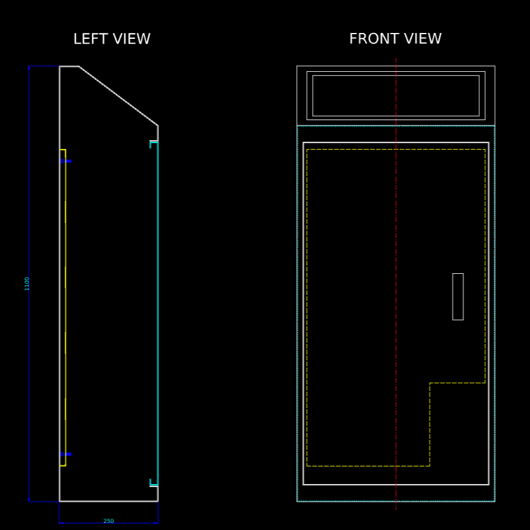
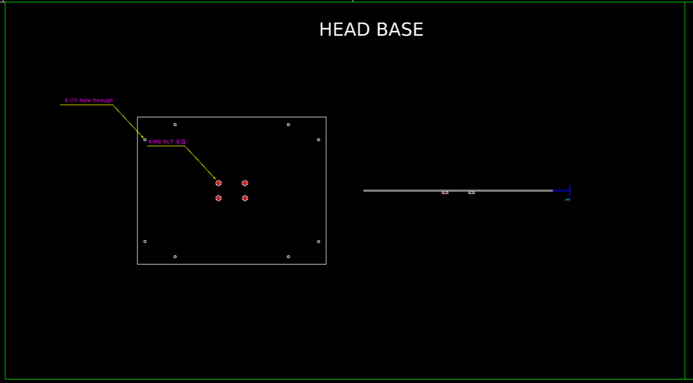
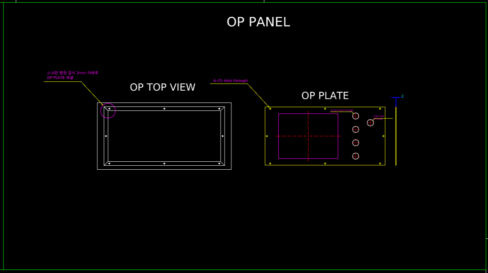
3D 모델링: 전체 조립 뷰
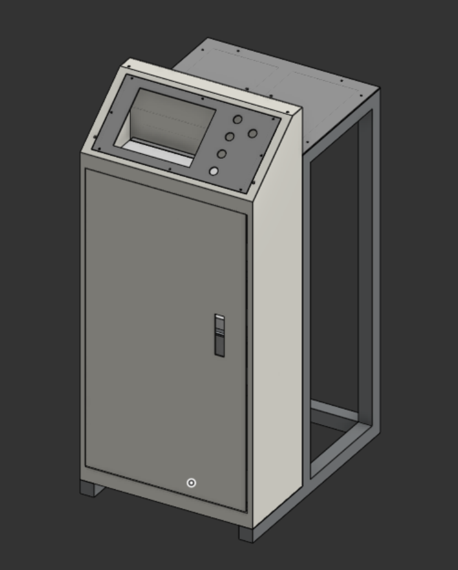
전체 조립 형상
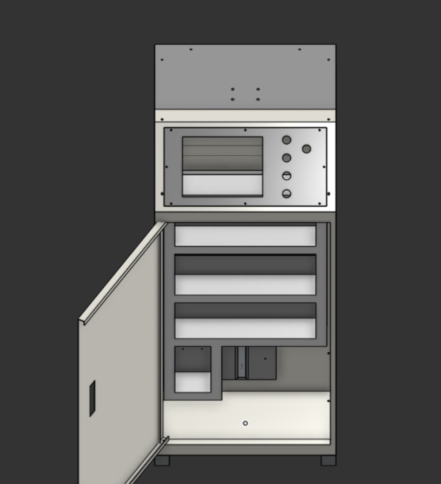
45도 각도 뷰
3D 모델링: 다각도 외관 뷰
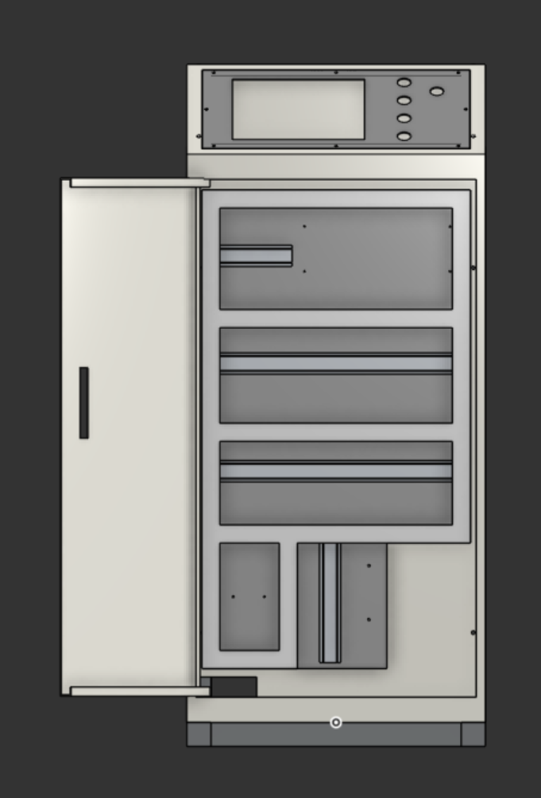
정면
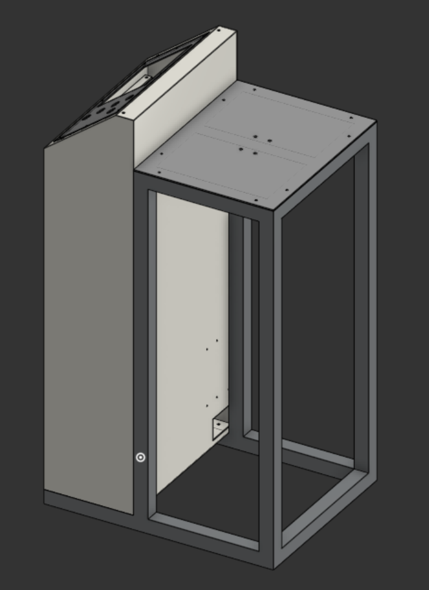
후면
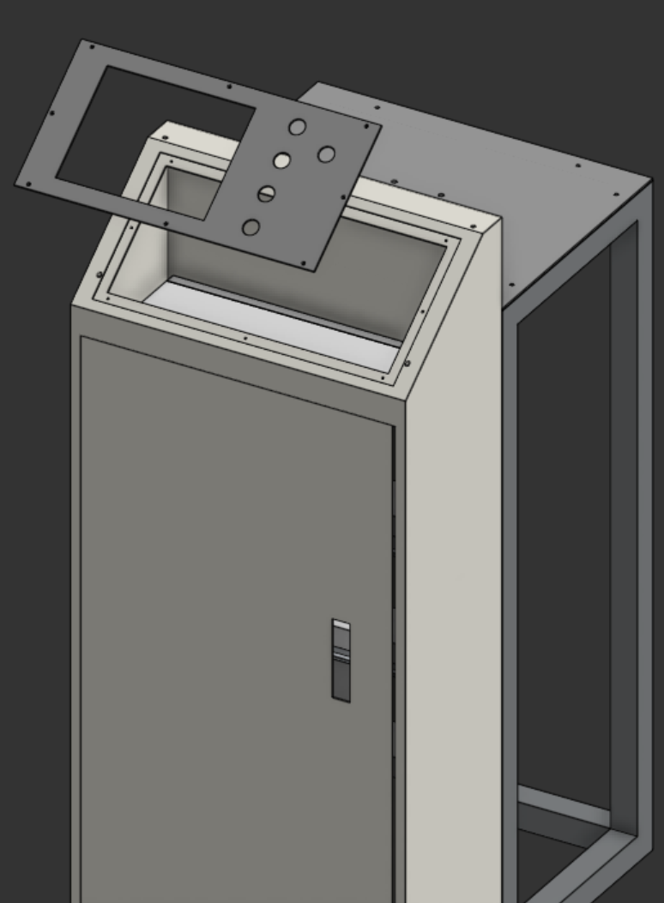
상단
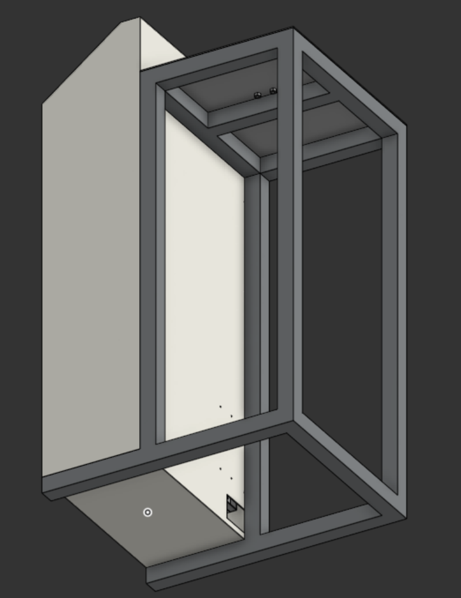
하단
BOM (Bill of Materials)
| 품명 | 규격 | 제조사 | 수량 |
|---|---|---|---|
| ELCB | EBS32Fb-20A 30mA | LS ELECTRIC | 1 |
| MCCB | EBS32Fb-10A 30mA | LS ELECTRIC | 1 |
| CP | GCP32AN-5A | HONEYWELL | 1 |
| GCP32AN-3A | HONEYWELL | 1 | |
| GCP32AN-1A | HONEYWELL | 1 | |
| GCP31AN-5A | HONEYWELL | 1 | |
| NOISE FILTER | WYFT10T1AD | WOONYOUNG | 1 |
| WYFT05T1AD | WOONYOUNG | 1 | |
| SMPS | MDR-100-24 | MEANWELL | 1 |
| MC | MC-22b / DC24V | LS ELECTRIC | 1 |
| MC-9b / DC24V | LS ELECTRIC | 1 | |
| RELAY | HR710-2PL | KACON | 2 |
| RELAY SOCKET | KLY2C | KACON | 2 |
| TB | KTB1-03003-C | KACON | 1 |
| KTB2-015 | KACON | 8 | |
| XTB-COM20B | SAMWON ACT | 1 | |
| PLC UNIT | XGP-AC23 | LS ELECTRIC | 1 |
| XGP-CPUE | LS ELECTRIC | 1 | |
| XGI-D24A | LS ELECTRIC | 1 | |
| XGQ-TR4A | LS ELECTRIC | 1 | |
| XGF-PN8B | LS ELECTRIC | 1 | |
| XGB-06M | LS ELECTRIC | 1 | |
| I/O TB | TG7-1H40Q | SAMWON ACT | 2 |
| SERVO DRIVER | IX7NHA-004 | LS ELECTRIC | 2 |
| BUSBAR | WSIG6-M412 | 구리구리 닷컴 | 1 |
| TOUCH MONITOR | TOPRX0800SD | M2I CORPORATION | 1 |
| PILOT LAMP | KGP-LV2G | KG AUTO | 1 |
| PUSH BUTTON LAMP | KGX-LMD21G | KG AUTO | 1 |
| KGX-LMD21R | KG AUTO | 1 | |
| KGX-LMD21A | KG AUTO | 1 | |
| EMS SWITCH + EMS GUIDE | A22E-M-10 | OMRON | 1 |
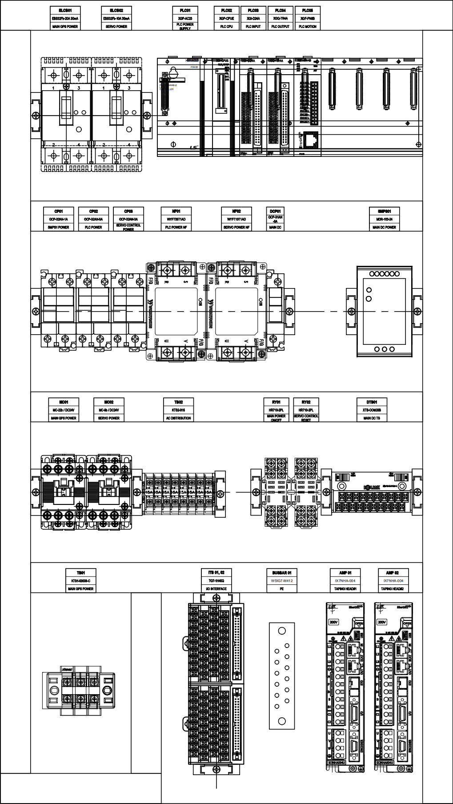
4. 제작 결과 및 구현
4.1 하드웨어 제작 결과
제품 외관
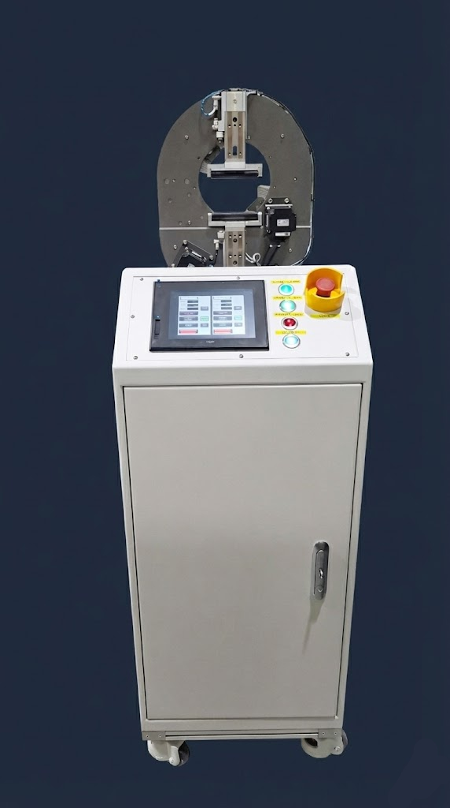
[사진 1: 전체 시스템 외관]
이미지 파일이 없습니다
제어반 내부
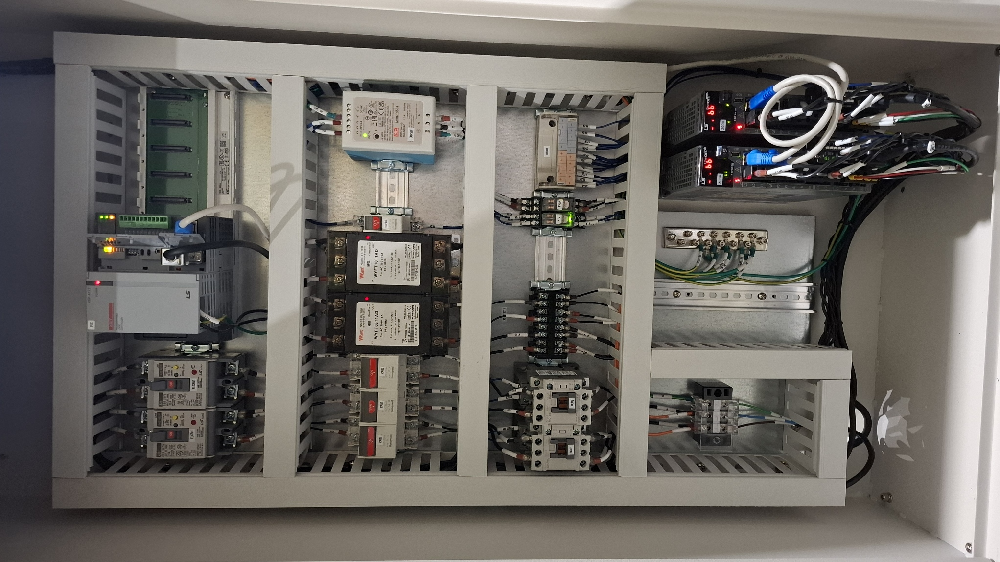
[사진 2: 제어반 내부]
이미지 파일이 없습니다
구동부 결합
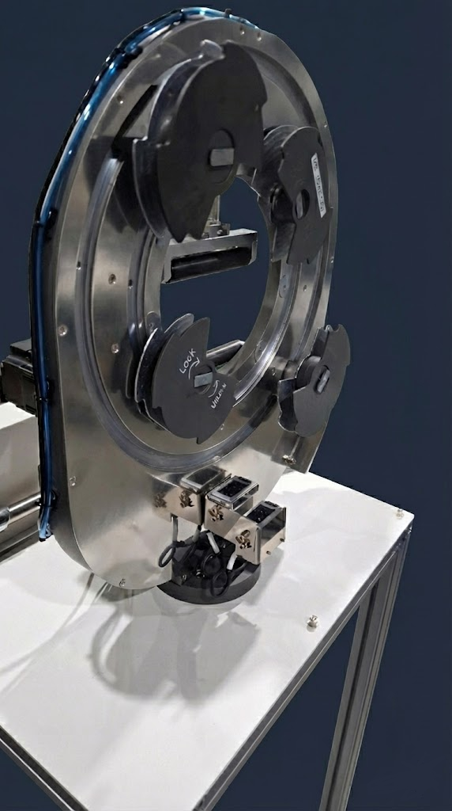
[사진 3: 구동부 상세]
이미지 파일이 없습니다
PLC 블록도
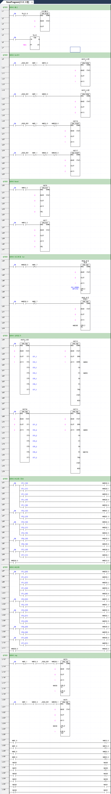
[PLC 블록도 이미지]
이미지 파일이 없습니다
4.2 소프트웨어(HMI) 구현 결과
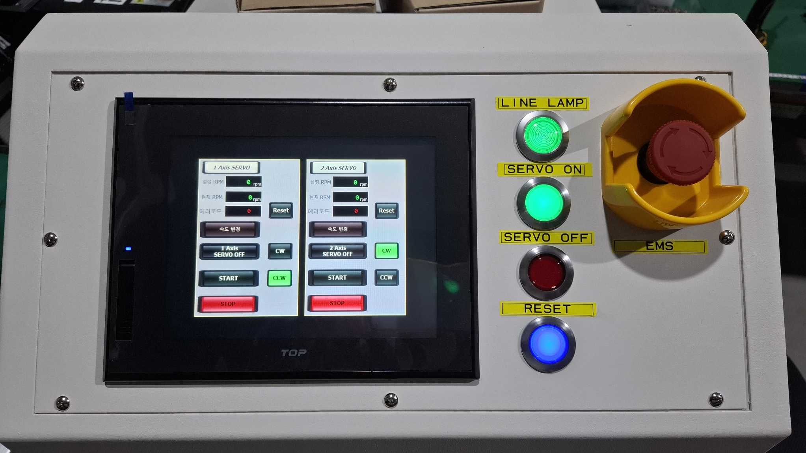
[사진: OP 판넬]
이미지 파일이 없습니다
[영상 플레이] (약 1분 내외)
비디오 파일이 없습니다
demo_video.mp4 파일을 images 폴더에 추가해주세요
품질관리 체크리스트
헤드 성능 검증 항목
| No. | 검사항목 | 측정기준값 | 측정값 | 측정도구 | 판정 |
|---|---|---|---|---|---|
| 1 | RPM 구간별 소음측정 (MICA) | 70dB 이하 | - | 데시벨미터 | - |
| 2 | RPM 구간별 소음측정 (GLASS FIBER) | 70dB 이하 | - | 데시벨미터 | - |
| 3 | RPM 구간별 진동발생 여부 확인 및 진원도 측정 (MIKA) | - | - | 진원도측정기 | - |
| 4 | RPM 구간별 진동발생 여부 확인 및 진원도 측정 (GLASS FIBER) | - | - | 진원도측정기 | - |
| 5 | 볼트체결상태 확인 | 오른쪽표 참조 | - | 토크렌치 | - |
| 6 | 볼트 I-MARKING 확인 | - | - | 육안 | - |
| 7 | 벨트텐션 확인 | - | - | 텐션게이지 | - |
| 8 | CLAMP CYLINDER 동작확인 | - | - | 육안 | - |
| 9 | COLOR SENSOR, CYLINDER SENSOR I/O CHECK | - | - | 육안 | - |
| 10 | 제품 스크래치 상태 확인 | - | - | 육안 | - |
볼트체결 토크 규격표
| 볼트 규격 | 체결 토크 |
|---|---|
| M3 | 17 (kgf/cm) |
| M4 | 40 (kgf/cm) |
| M5 | 81 (kgf/cm) |
| M6 | 138 (kgf/cm) |
| M8 | 334 (kgf/cm) |
문제점 분석 및 개선내용
1. 제품 설계 문제
문제점
서보드라이버 사이즈로 인한 외함 깊이 증가 → 제품 사이즈 증가
문제점 분석
서보드라이버 취부 자리를 속판 두께만큼 컷팅하면 외함 사이즈 유지 가능
수정내용
속판의 서보드라이버 취부 자리를 컷팅하고 외함 뒷면에 직결하여 외함 사이즈 유지
2. 하드웨어 문제
문제점
MC1 ON 시 MC 코일접점 채터링 현상 발생
문제점 분석
회사 내 노후화된 재고품목 릴레이를 이용하여 문제가 되는 것으로 확인
수정내용
회사 내 새 제품으로 교환하여 MC ON 정상동작 확인
3. 소프트웨어 문제
문제점
PLC ↔ 터치모니터 232 시리얼통신 오류
문제점 분석
시리얼 포트 핀맵 오류 가능성 확인
수정내용
PLC 시리얼 통신포트 D-SUB 커넥터 핀맵 수정
수정 전: 1(RX), 2(TX), 5(SG)
수정 후: 2(RX), 3(TX), 5(SG)
최종 구현 결과
달성
아쉬웠던 점
감사합니다
Q&A